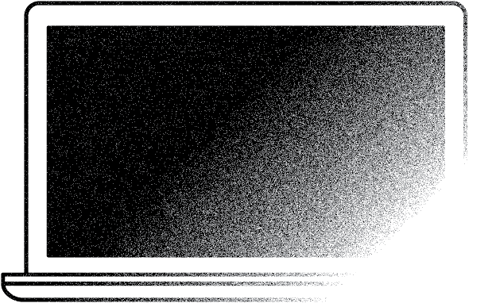

is it because it's...
do you have an older version of this device? yes no is your current device too slow to utilize properly? yes no have you tried (if applicable) with your current device: - freeing up storage by deleting unwanted files or moving them to a cloud service - checking that the software up to date - Re-installing the operating system yes no
do you know all the new features included with this device? yes no are you going to utilize all of the features offered by this new device? yes no do you have an older version of this device? yes no Is it completely uncapable of performing these features? yes no do you think these new features will have an important impact on the way you utilize or experience this technology? yes no
Is it the newness that makes it prettier? yes no DO YOU THINK the design improveS the functionality of the device? yes no DO YOU THINK THIS NEW DEVICE WILL STAY “PRETTY” FOR A LONG TIME IF YOU GIVE IT THE SAME CARE YOU USUSALLY GIVE ALL YOUR ELECTRONICS? yes no do you have an older version of this device? yes no despite its unsightly appearance, does it still work properly? yes no
do you think “popular” always results in “high-quality” and “suitable”? yes no do you think it’s important for you to constantly keep up with trends? yes no Do you think owning newer devices makes a person more likeable? yes no do you feel that in some way you “fit in” better by owning the latest technology? yes no
before you decide though, let me tell you a bit about
e-waste our current cycle of consumption has made electronic waste or E-waste (Electronic equipment or parts of equipment discarded when broken or obsolete) the world's fastest-growing kind of waste. faster than any other form of waste by a multiple of three.
Americans dispose of 47.4 million computers, 27.2 million televisions, and 141 million mobile devices annually. Only a quarter of all those devices are collected for recycling
E-waste is expensive to recycle and, when it does happen, it is a labor-intensive process, which is why, much of what’s collected for recycling in the United States is shipped to develo- ping countries where unskilled and poorly paid laborers disassemble the devices to get to the commercially useful materials. Often this work is done without the regulation required by the environ- mental laws of industrialized nations, creating environmental hazards in those developing countries.
so, is THAT new watch truly worth it?

ideally, Make this decision for the collective wellbeing. otherwise, save that money and go to the beach or something